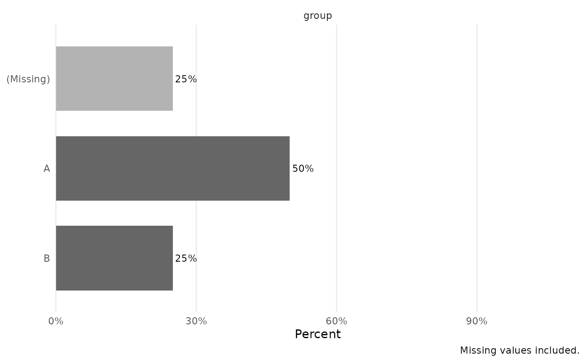

Provides a SciDataReportR-native categorical inspection summary and plot
inspired by inspectdf::inspect_cat(), created because inspectdf is archived
and no longer available on CRAN.
Usage
InspectCategoricalSummary(
Data,
Variables = NULL,
Codebook = NULL,
IncludeMissing = TRUE,
MissingLabel = "(Missing)",
RetainLabels = TRUE,
SortLevelsBy = c("Frequency", "Value", "None"),
SortVariablesBy = c("Input", "Label", "MissingPercent", "UniqueLevels", "TotalN"),
Descending = TRUE,
MaxLevels = 30,
Plot = TRUE,
PlotType = c("bar", "lollipop"),
FacetScales = c("free_y", "fixed"),
UsePercent = TRUE,
LabelBars = TRUE,
WrapLabels = 35,
BaseSize = 11
)Arguments
- Data
A data frame.
- Variables
Optional character vector of categorical variables to summarize. If
NULL, character, factor, logical, labelled, and haven-labelled columns are detected automatically.- Codebook
Optional data frame with
VariableandLabelcolumns.- IncludeMissing
Logical. If
TRUE, missing values are included as a level and in percentages.- MissingLabel
Character label to display for missing values.
- RetainLabels
Logical. If
TRUE, use variable labels fromCodebookand value labels from labelled variables when available.- SortLevelsBy
One of
"Frequency","Value", or"None".- SortVariablesBy
One of
"Input","Label","MissingPercent","UniqueLevels", or"TotalN".- Descending
Logical. If
TRUE, sort selected summaries in descending order.- MaxLevels
Positive integer giving the maximum number of levels to display per variable in the plot before collapsing lower-ranked levels to
"(Other)".- Plot
Logical. If
TRUE, return a ggplot object.- PlotType
One of
"bar"or"lollipop".- FacetScales
One of
"free_y"or"fixed".- UsePercent
Logical. If
TRUE, plot percentages; otherwise plot counts.- LabelBars
Logical. If
TRUE, add readable labels to bars or points.- WrapLabels
Integer number of characters used to wrap displayed level and facet labels.
- BaseSize
Base font size passed to
theme_minimal().
Value
A named list with Summary, a tibble containing categorical counts
and percentages, and Plot, a ggplot object when Plot = TRUE or NULL
when Plot = FALSE.
References
Rushworth A. inspectdf: Inspection, comparison and visualisation of data frames. Formerly available on CRAN; archived package.
Examples
df <- data.frame(
group = factor(c("A", "B", "A", NA), levels = c("A", "B", "C")),
flag = c(TRUE, FALSE, TRUE, NA),
text = c("low", "high", "low", "mid")
)
result <- InspectCategoricalSummary(df, Plot = FALSE)
result$Summary
#> # A tibble: 9 × 13
#> Variable Label Level LevelLabel N Percent Missing TotalN NonMissingN
#> <chr> <chr> <chr> <chr> <int> <dbl> <lgl> <int> <int>
#> 1 group group A A 2 0.5 FALSE 4 3
#> 2 group group B B 1 0.25 FALSE 4 3
#> 3 group group (Missing) (Missing) 1 0.25 TRUE 4 3
#> 4 flag flag TRUE TRUE 2 0.5 FALSE 4 3
#> 5 flag flag FALSE FALSE 1 0.25 FALSE 4 3
#> 6 flag flag (Missing) (Missing) 1 0.25 TRUE 4 3
#> 7 text text low low 2 0.5 FALSE 4 4
#> 8 text text high high 1 0.25 FALSE 4 4
#> 9 text text mid mid 1 0.25 FALSE 4 4
#> # ℹ 4 more variables: MissingN <int>, MissingPercent <dbl>, UniqueLevels <int>,
#> # VariableClass <chr>
plot_result <- InspectCategoricalSummary(df, Variables = "group", Plot = TRUE)
plot_result$Plot
